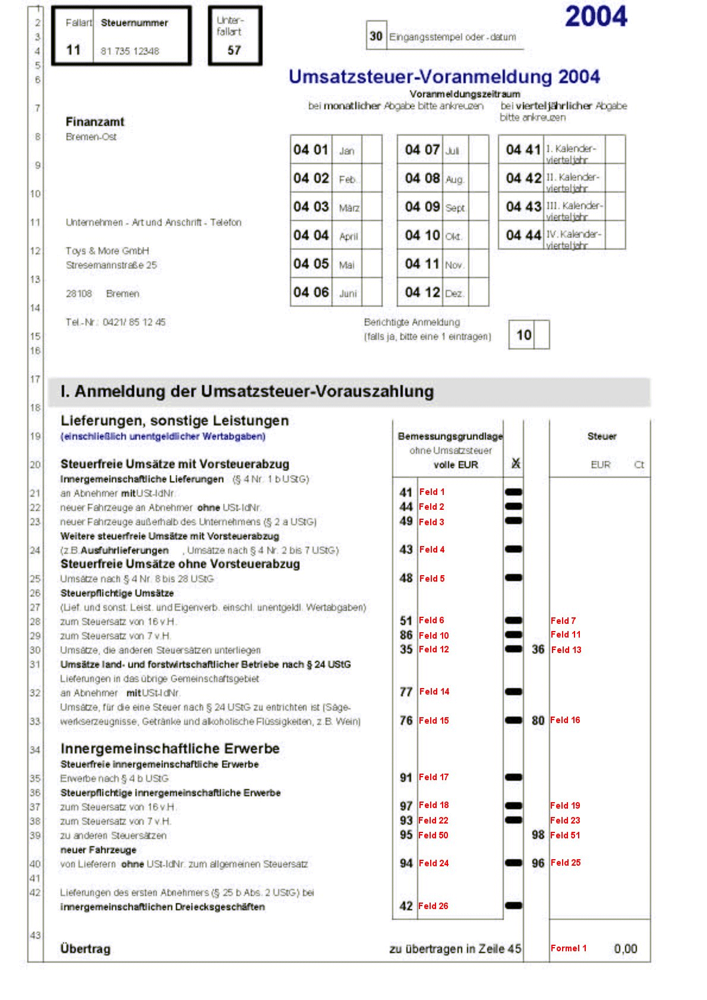
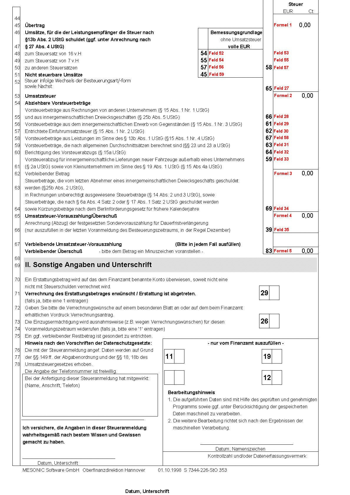
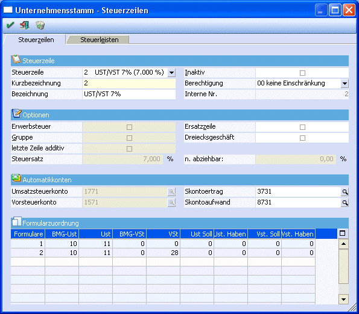
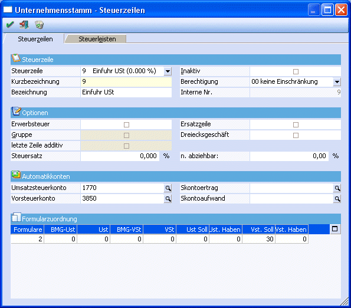

Anhand des deutschen UVA-Formulars (das sind die Formulare 1 und 2 für den Ausdruck - siehe Kapitel "USt-Voranmeldung") wird nun dargestellt, wie sich die Formulare zusammensetzen und was bei den einzelnen Steuerzeilen eingegeben werden muss, damit das Formular korrekt ausgedruckt werden kann.
Das Formular gliedert sich in Positionen und in Summen, wobei die Summen immer aus verschiedenen Positionen berechnet werden.
Erklärung zum Formular
Zunächst werden alle im Formular zu bedruckenden Felder mit Positionsnummern belegt. Jede Positionsnummer entspricht einer Variable, die am Formular gedruckt werden kann. Im Folgenden finden Sie die Belegung unserer Standardauslieferung: Für alle auszufüllenden Felder gilt eine fortlaufende Nummerierung, wobei in Zeile 21 die Position 1 gedruckt wird. Die Summe der Umsatzsteuer setzt sich zusammen aus den Positionen 7, 11, 13, 16, 19, 23, 25 und 51. Diese Summe findet sich auch als Übertrag in Zeile 45 (1. und 2. Seite).


Beschreibung der Formelfelder
Ø Formulare:
1, 2 UVA-Formular Deutschland 1. und 2. Seite (EUR)
Ø Formel 1:
Feld7+Feld11+Feld13+Feld16+Feld19+Feld23+Feld25+Feld51
Ø Formel 2:
Feld7+Feld11+Feld13+Feld16+Feld19+Feld23+Feld25+ Feld27+Feld51+Feld53+Feld55+Feld57
Ø Formel 3:
(Feld7+Feld11+Feld13+Feld16+Feld19+Feld23+Feld25+ Feld27+Feld51+Feld53+Feld55+Feld57) - (Feld28+Feld29+Feld30+Feld31+Feld32+Feld33+Feld58)
Ø Formel 4:
(Feld7+Feld11+Feld13+Feld16+Feld19+Feld23+Feld25+ Feld27+Feld51+Feld53+Feld55+Feld57) - (Feld28+Feld29+Feld30+Feld31+Feld32+Feld33+Feld34+Feld58)
Ø Formel 5:
(Feld7+Feld11+Feld13+Feld16+Feld19+Feld23+Feld25+ Feld27+Feld51+Feld53+Feld55+Feld57) - (Feld28+Feld29+Feld30+Feld31+Feld32+Feld33+Feld34+Feld35+Feld58)
Ø "Normale" Steuerzeilen:
Die Position 1 enthält z. B. den Gesamtbetrag der Bemessungsgrundlagen für steuerfreie Umsätze mit Vorsteuerabzug an Abnehmer mit USt-IdNr. Für die entsprechenden Steuerzeilen (Erlöse 0 %) heißt das, dass für das Formular 1 die Bemessungsgrundlage in die Position 1 auf dem Formular 1 gerechnet werden muss.
Die Position 6 enthält den Gesamtbetrag der Bemessungsgrundlagen für 16 %ige Umsätze. D. h. in der Steuerzeile muss bei den entsprechenden Zeilen (Umsatzsteuerzeilen mit 16 %) bei der BMG UST 6 eingetragen werden. Da dieses Feld aber schon mit der Position 1 belegt ist, wird eine zweite Zeile eröffnet, wo wieder das Formular 1 eingetragen wird. Dort kann die Position 6 bei der BMG UST hinterlegt werden. Pro Steuerzeile kann ein Formular auch öfter verwendet werden, so dass jede Steuerzeile an jeder beliebigen Position hinterlegt werden kann.
Die Position 7 enthält den Steuerbetrag der 16 %igen Umsätze. Daher muss in den entsprechenden Steuerzeilen (Umsatzsteuerzeilen mit 16 %) im Feld USt 7 eingetragen werden.
Da die Position 7 für den Übertrag benötigt wird und der Übertrag auch im Formular 2 (2. Seite) angedruckt werden muss, muss in allen Steuerzeilen (Umsatzsteuerzeilen mit 16 %) im Feld USt ebenfalls die Position 7 eingetragen werden.
Beispiel für eine "normale" Steuerzeile:

Sonderfälle von Steuerzeilen
Ø Einfuhrumsatzsteuer - Position 30 im Formular 2
Die Einfuhrumsatzsteuer muss, da es keine Bemessungsgrundlage und keinen Steuersatz gibt, immer manuell und direkt auf das jeweilige Konto gebucht werden. Dadurch ergibt sich für den Andruck auf das Formular ein besonderer Status. In der Steuerzeile der Einfuhrumsatzsteuer muss daher das Formular 2 hinterlegt werden, im Feld VSt-Soll wird 30 eingetragen.
Beispiel für die Definition der Steuerzeile Einfuhrumsatzsteuer:
